MLP architecture used for the 2D neural field.
In this project, I implement a full Neural Radiance Field (NeRF) system from scratch. This includes camera calibration, pose estimation, multiview ray sampling, volume rendering, and training neural networks for both 2D neural fields and 3D radiance fields. The entire NeRF pipeline is built in PyTorch, following the project specification closely.
My implementation supports both the provided LEGO dataset and a custom dataset (photos of my computer mouse), with improvements such as checkpoint-based training, increased sampling resolution, and custom rendering hyperparameters for high-quality reconstruction.
For Part 0, I completed the full calibration pipeline: Aruco detection → camera intrinsic calibration → pose estimation (PnP) → undistortion → dataset packaging. These calibration results are required to produce accurate camera-to-world matrices for NeRF training.
I captured 39 calibration images of 4×4 ArUco markers using a fixed zoom level.
In each image, I detected all visible tags and collected the corner correspondences.
I then used cv2.calibrateCamera() to compute the intrinsic matrix \(K\)
and distortion coefficients.
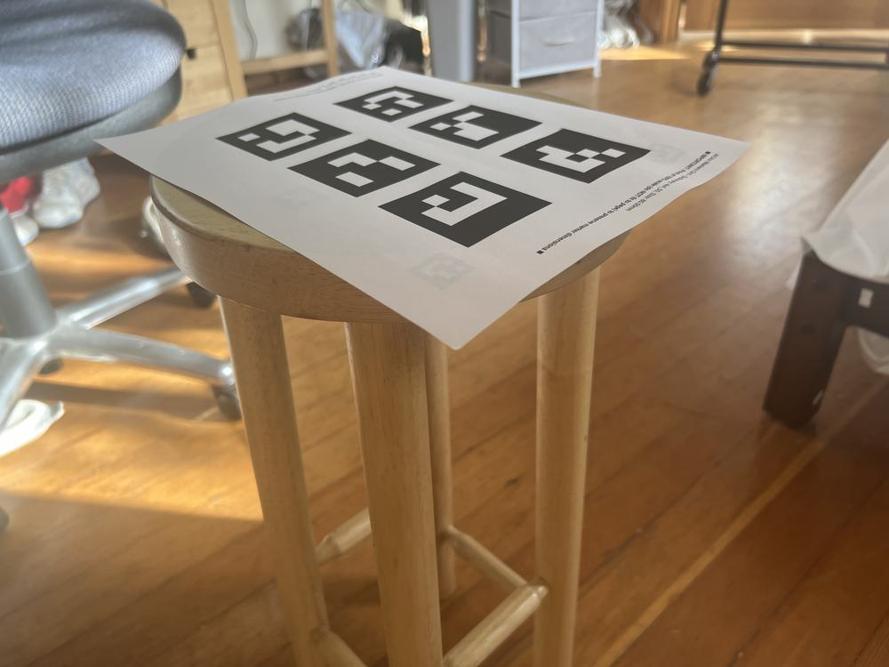
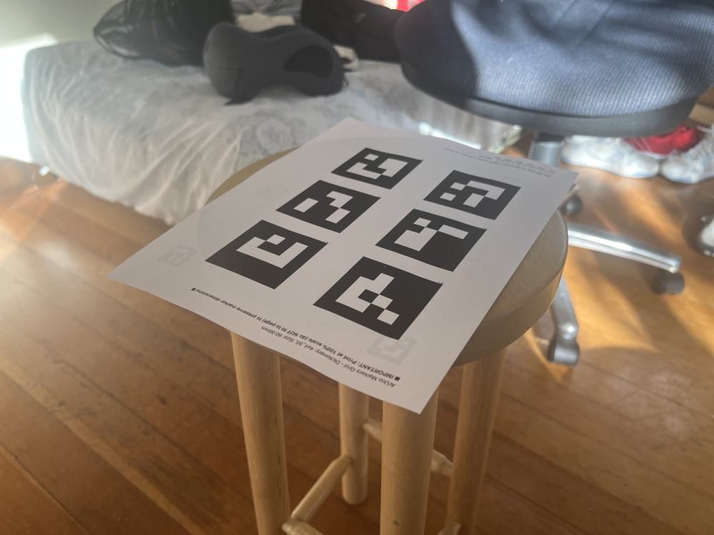
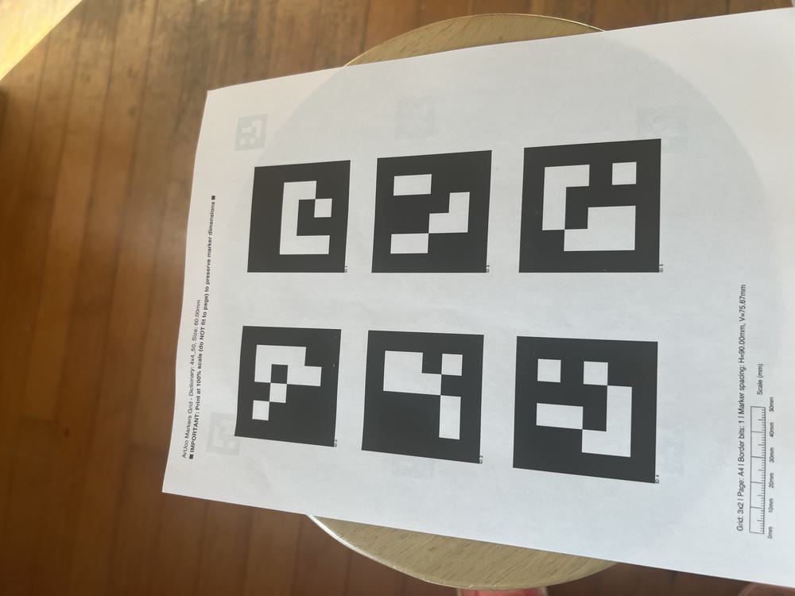
I chose a small mouse as the object for my custom NeRF in Part 2.6. I printed a single ArUco tag with a white border and placed the mouse next to it. I then captured 80 images around the object at varying angles and heights.
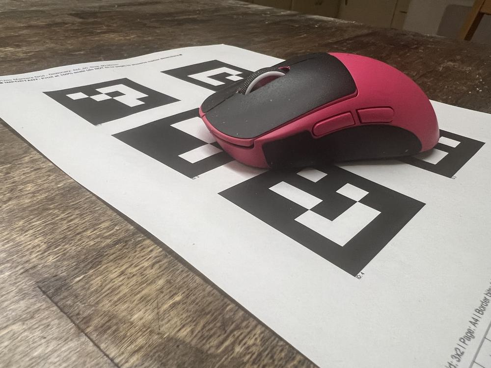
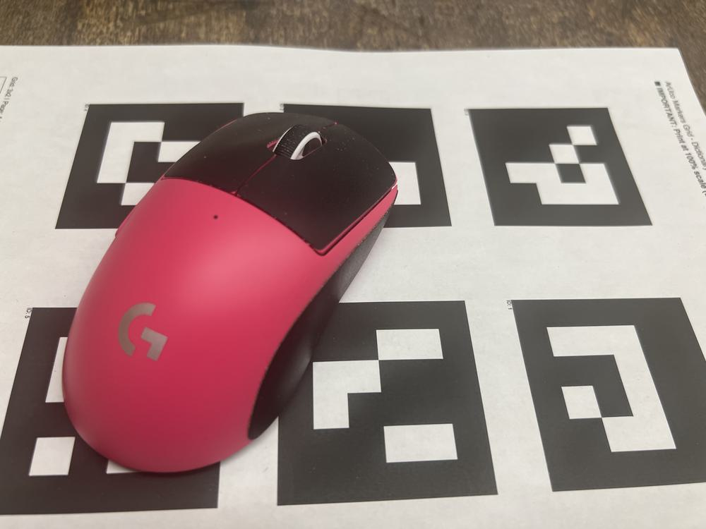
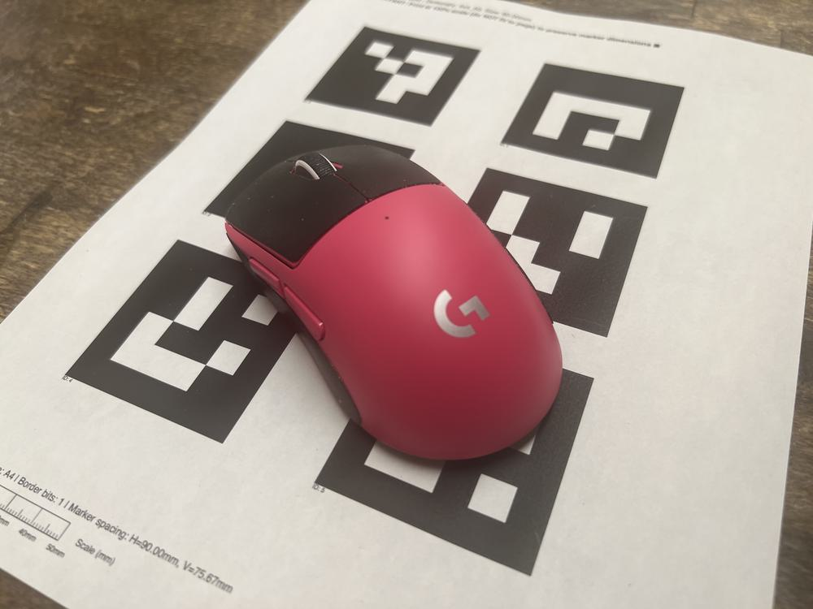
For each image, I detected the single printed ArUco tag and extracted its corner coordinates.
Using the known tag size, I constructed the 3D points and applied
cv2.solvePnP to estimate rotation and translation.
Because SolvePnP returns a world-to-camera transform, I inverted it to obtain
the camera-to-world (c2w) matrix required for NeRF.
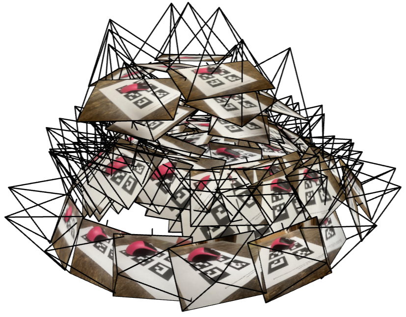
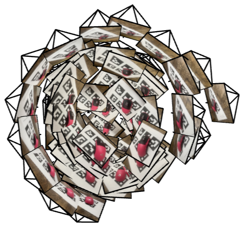
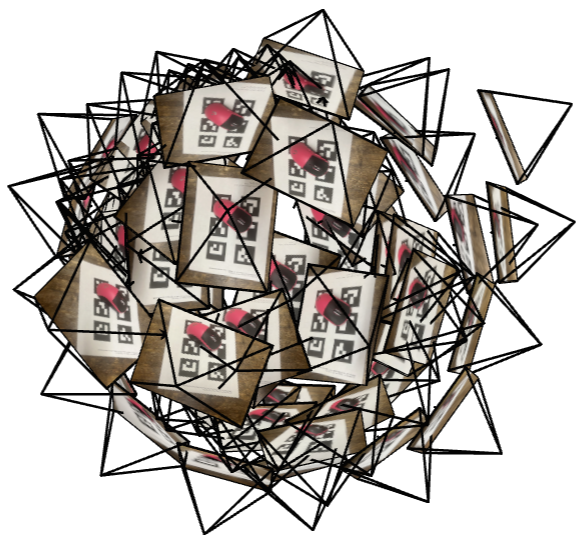
Finally, I undistorted each captured image using the recovered intrinsic matrix
and distortion coefficients.
I then split the dataset into training, validation, and test sets,
and saved everything in .npz format:
images_train: Undistorted training imagesc2ws_train: Training camera-to-world matricesimages_val: Validation imagesc2ws_val: Validation posesc2ws_test: Test poses for novel-view synthesisfocal: The recovered focal length (fx=fy)Before implementing a full NeRF, I built a 2D neural field that maps 2D pixel coordinates to RGB values. This part helps validate the positional encoding logic, MLP architecture, and optimization loop, all of which extend directly to 3D NeRF.
My model is an MLP with Sinusoidal Positional Encoding (PE). For a normalized 2D coordinate \((x,y)\in[0,1]^2\), the encoding is \[ \phi(x,y) = [\,x,y,\ \{\sin(2^k \pi x),\ \cos(2^k \pi x),\ \sin(2^k \pi y),\ \cos(2^k \pi y)\}_{k=0}^{L-1}\,], \] which gives an input feature dimension of \(2 + 4L\) (e.g., \(L=10 \Rightarrow 42\) dims). The MLP uses a hidden width of 256 and ends with a Sigmoid to output RGB in \([0,1]\). I train with Adam (lr \(=1\text{e}{-2}\)), batch size \(=10{,}000\), and \(1\text{k}\sim10\text{k}\) iterations, reporting PSNR during training.
For each training iteration, I randomly sample 10,000 pixels from the target image. Each sample consists of:
I used:
The following three images show my neural field fitting results on the staff-provided image at different training iterations:
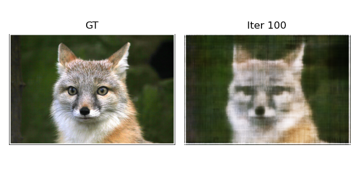
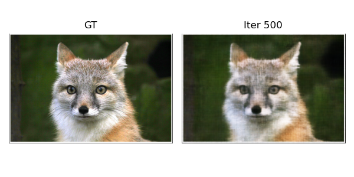
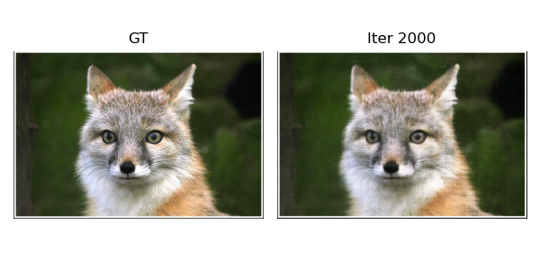
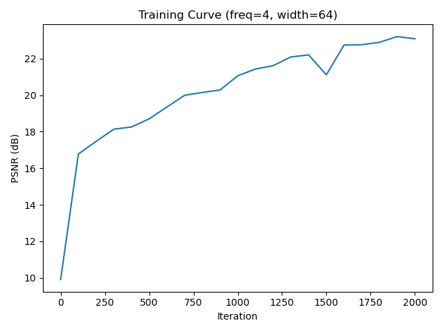
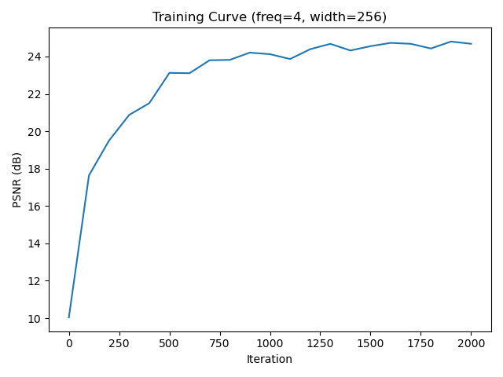
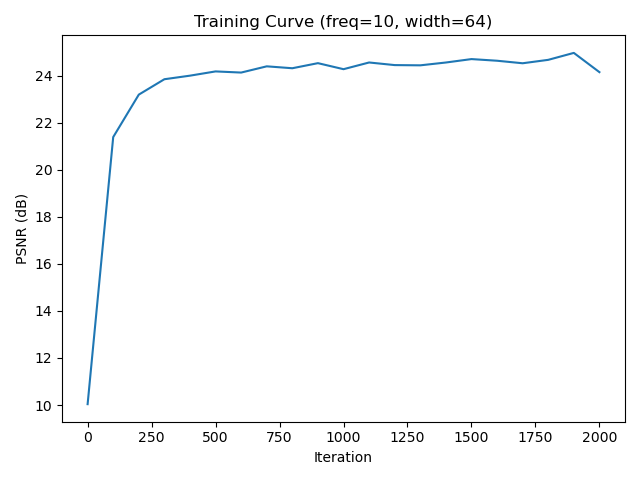
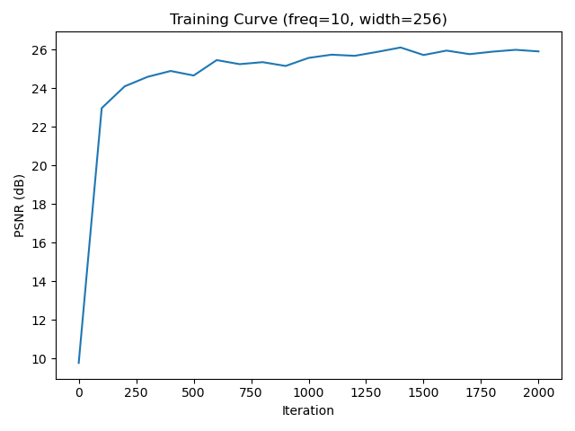
Below are several reconstructed images at different training iterations:
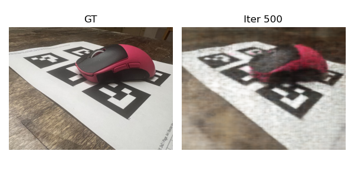
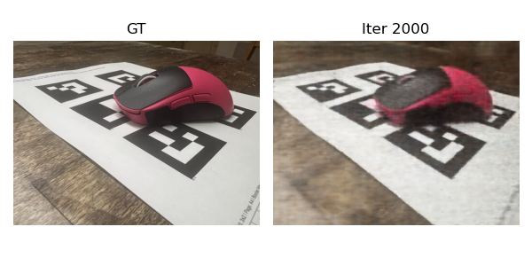
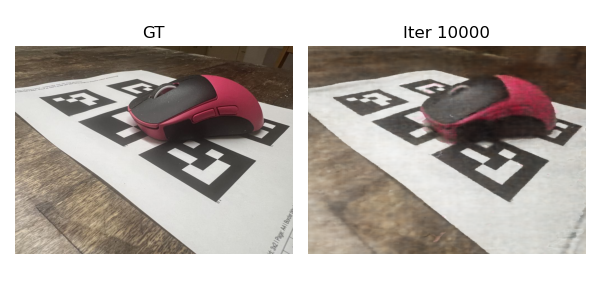
I compare two MLP hidden dimensions (width) and two positional encoding frequency levels (L):
| Hidden Dimension (Width) | PE Frequency Level (L) | Result |
|---|---|---|
| W = 64 | L = 4 |
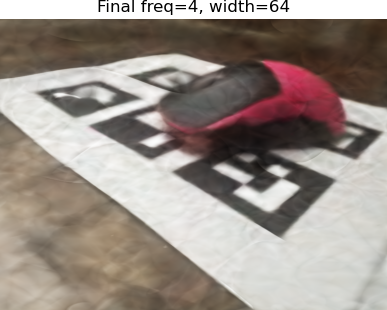 |
| W = 64 | L = 10 |
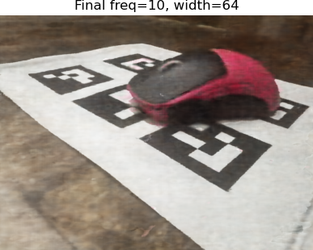 |
| W = 256 | L = 4 | |
| W = 256 | L = 10 |
Below are the PSNR curves for all four hyperparameter settings:
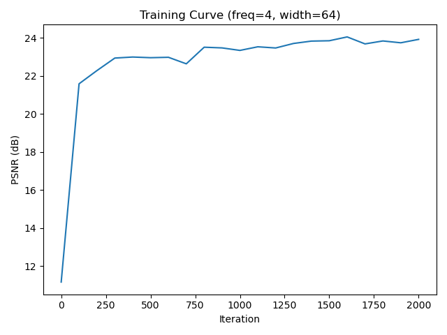
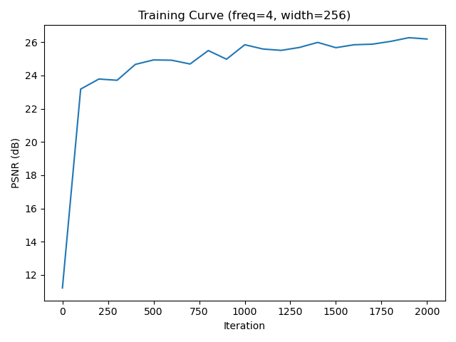
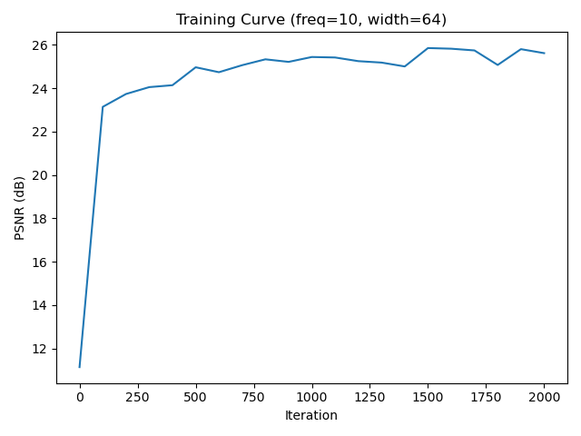
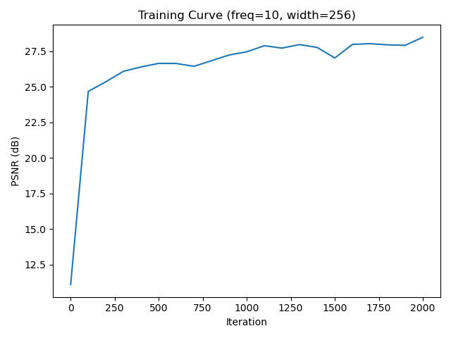
In Part 2, I extend the 2D neural field to a full 3D NeRF by predicting spatial density and view-dependent color for each sample point along camera rays. This section describes the geometric operations required before training.
A 3D point in camera coordinates is transformed to world coordinates by:
$$x_w = R x_c + t$$
I implemented a function supporting batch inputs and validated it using the identity:
$$x_c = c2w^{-1}(c2w(x_c))$$
Using the intrinsic matrix
\( K = \begin{bmatrix} f & 0 & c_x \\ 0 & f & c_y \\ 0 & 0 & 1\end{bmatrix} \)
I invert the projection equation to compute camera-space coordinates of each pixel at depth 1. This enables construction of ray directions.
A ray is defined by:
For each ray, I uniformly sample n_samples = 64 points in the range
[near, far].
During training I enable stratified perturbation to improve coverage.
To better understand the ray sampling pipeline, I visualized the camera frustums,
randomly selected rays, and the 3D sample points along each ray. This was done using
viser, which provides an interactive 3D viewer in the browser.
The implementation is based on my dataset and the functions defined in
RaysData and sample_along_rays.py.
First, I load all training images, intrinsics, and camera poses from
my_data.npz, then construct the RaysData object.
I randomly sample 100 rays from random images and then sample 3D points along each ray
using uniform depth sampling.
I add each camera frustum to the 3D scene with its image attached for reference. Each sampled ray is drawn as a short colored line for easy inspection.
The sampled points along the rays form a 3D cloud inside the scene. This helps verify that depth sampling behaves correctly and that the near/far range is properly chosen for our dataset.
Opening the viewer reveals the camera positions, rays shooting into the scene, and a cluster of sampled points along each ray.
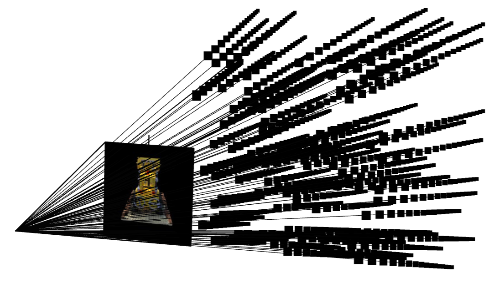
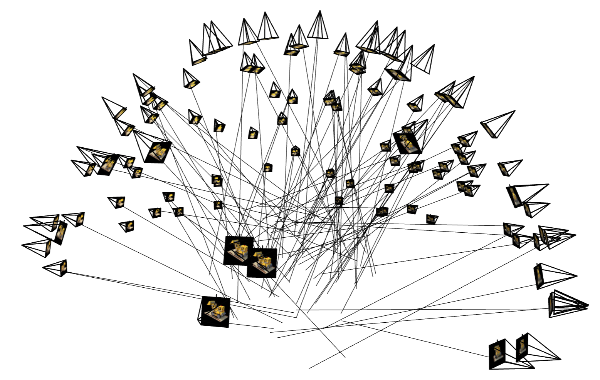
I implemented a full NeRF-style MLP following the architecture described in the
original NeRF paper. The network predicts both the density σ and the RGB
color for each sampled 3D point along a ray. The implementation is located in
nerf_network.py.

Both the 3D world coordinates x ∈ ℝ³ and the 3D viewing directions
d ∈ ℝ³ are encoded using sinusoidal positional encodings (PE).
For each input channel, the encoding expands the vector into:
[x, sin(2⁰πx), cos(2⁰πx), ..., sin(2⁽ᴸ⁻¹⁾πx), cos(2⁽ᴸ⁻¹⁾πx)]
The coordinate encoding uses Lx = 10 frequency bands, producing
3 × (2Lx + 1) = 63 features.
The viewing-direction encoding uses Ld = 4, producing 27 features.
The NeRF MLP consists of:
ReLU(W → 1)Sigmoid output in [0,1]This matches the NeRF design: density depends only on the 3D position, while the RGB color depends on both the point and the viewing direction.
The full implementation is shown below:
This network produces valid densities (non-negative) and colors (bounded in [0,1]), and is used by the volume renderer in Part 2.5.
Let a camera ray be r(t) = o + t·d with near/far bounds tn and
tf. Following NeRF, the pixel color is the transmittance-weighted integral of
per-point radiance:
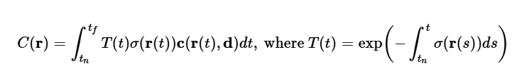
We sample depths {ti} uniformly (or stratified with jitter) between
[tn, tf], with step sizes Δi = ti+1 − ti.
Denote network outputs at each sample as σi and rgbi.
The standard alpha-compositing form is:
αi = 1 − exp(−σi · Δi) (termination prob. at sample i)Ti = ∏j<i (1 − αj) (transmittance up to i)wi = Ti · αi (compositing weight)C(r) = Σi wi · rgbi
Depth (or opacity) can be accumulated analogously using the same weights
wi. During training we use stratified sampling (noise within each bin) and
during evaluation we disable jitter for deterministic renders.
torch.cumsum / torch.cumprod to
build Ti and wi efficiently.1e−10).sigmas is [B, N, 1], rgbs is [B, N, 3],
step size array Δ is [N] or [B, N, 1], output color is [B, 3].Tfinal · bg after the sum.
I load the preprocessed LEGO dataset (lego_200x200.npz), construct camera rays,
sample 3D points, evaluate the NeRF network, and render colors via volume rendering.
The training objective is MSE between rendered colors and ground-truth pixels; PSNR is reported
for validation snapshots.
For each iteration, I sample a batch of rays by either:
(a) per-image sampling (choose M images, then take N//M rays each), or
(b) global sampling over all pixels.
I normalize UVs to pixel centers by adding 0.5 offsets and map UV → rays via my pixel_to_ray.
I use Adam with learning rate 5e-4, batch size of 10k rays (for the LEGO
baseline), and n_samples = 64 along each ray. Periodic validation reports PSNR on the
6 validation views.
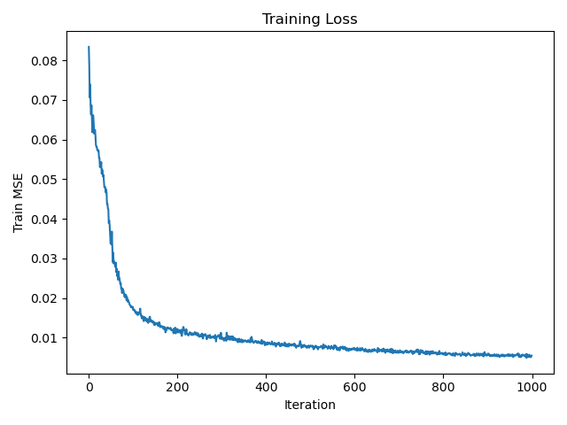
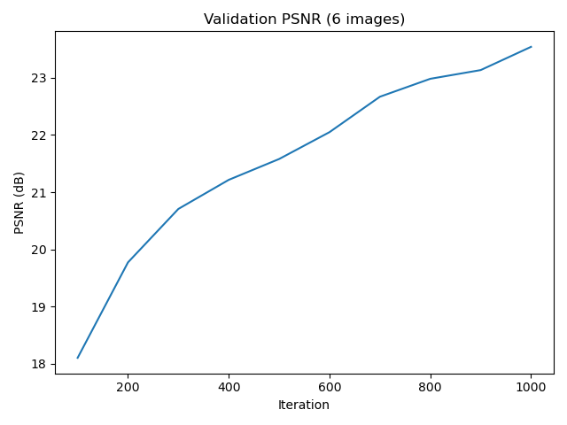
Below are intermediate renderings of the LEGO NeRF at different training iterations. As training proceeds, both geometry and color become sharper and more accurate.
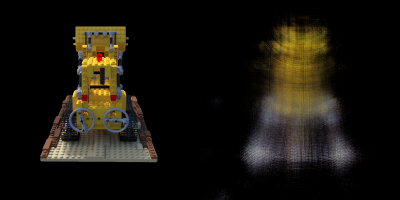
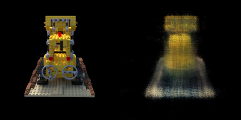
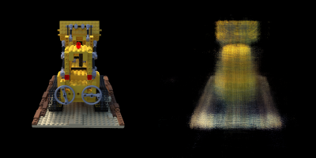
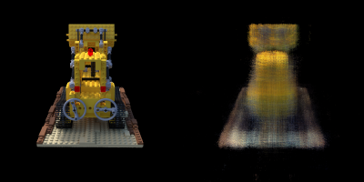
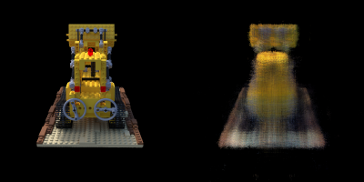
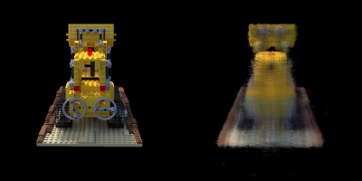
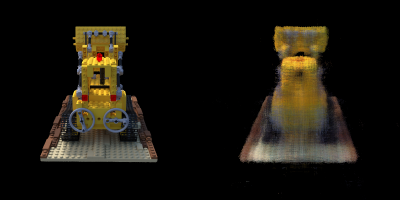
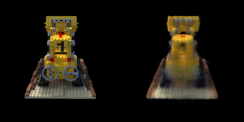
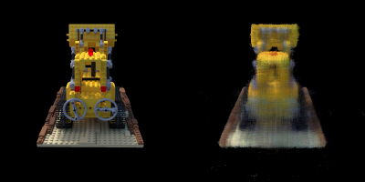
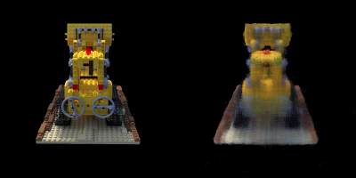
I render a novel-view video using the provided c2ws_test trajectory:
the camera circles the LEGO scene on a sphere around the object.
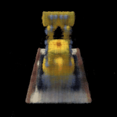
I collected a custom dataset consisting of 80 photos of a computer mouse next to a printed 4×4 ArUco tag. Using the same calibration pipeline from Part 0, I produced undistorted images and corresponding c2w poses. The scene is small and close to the camera, so I carefully tuned near/far and sampling density to avoid floating foggy voxels and to improve reconstruction.
.jpg)
n_samples = 128 (↑ from 64) to improve quality on my real data.= 512 to better fit high-frequency details.iters = 40,000 total iterations.batch_rays = 5,000 (↓ to keep VRAM manageable). near = 0.001, far = 1.0 to mitigate mid/far fogging and near-plane occlusion artifacts.chunk = 8192 during inference; 16384 OOMs on 16 GB with width=512, so I cut it in half and pay extra time instead.5e-4 (cosine decay to stabilize late training).
A larger MLP and more samples per ray substantially improve reconstruction fidelity, but increase memory.
By lowering batch_rays and deferring renders until the end, I keep peak memory within 16 GB.
The tighter [near, far] also removes translucent “air” density that otherwise appears when the
sampling slab is too large for a close-range desk scene.
I reuse the multiview rays pipeline from LEGO, but with dataset-specific near/far, higher
n_samples, and larger MLP. I log loss/PSNR and save weights periodically.
Below are intermediate renderings from my custom dataset (mouse object). As the number of iterations increases, the geometry becomes more stable and texture becomes sharper.
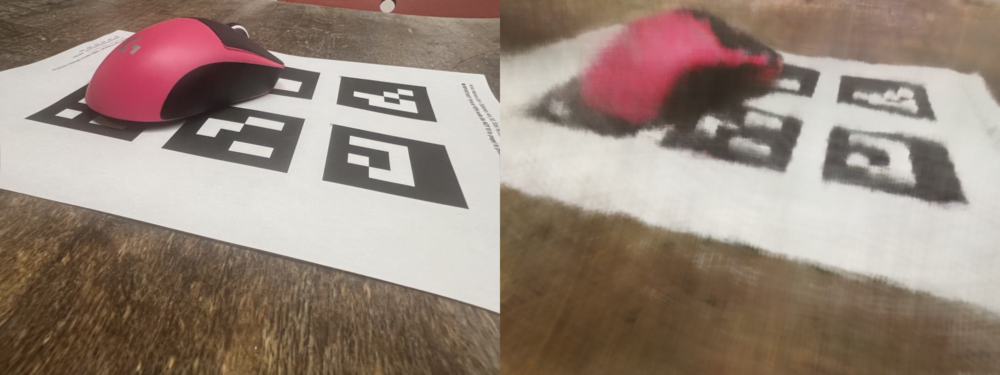
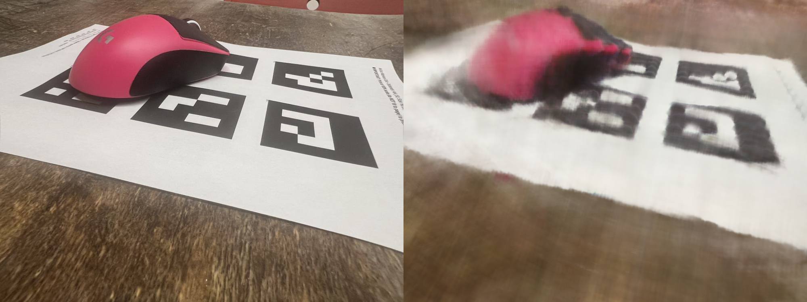
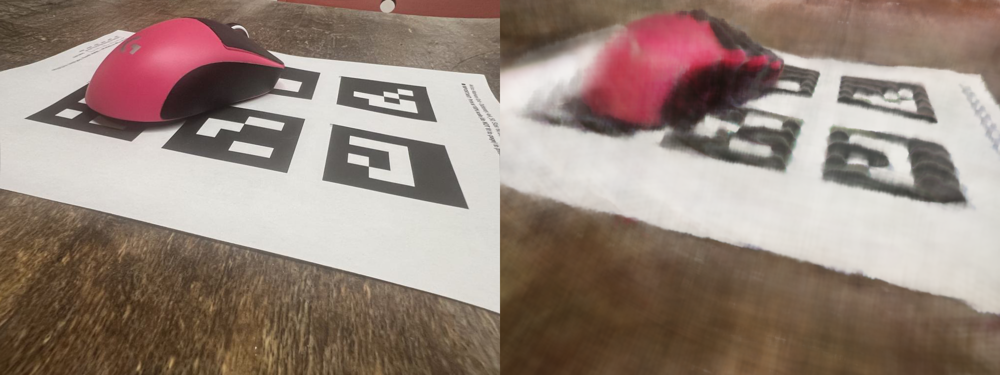
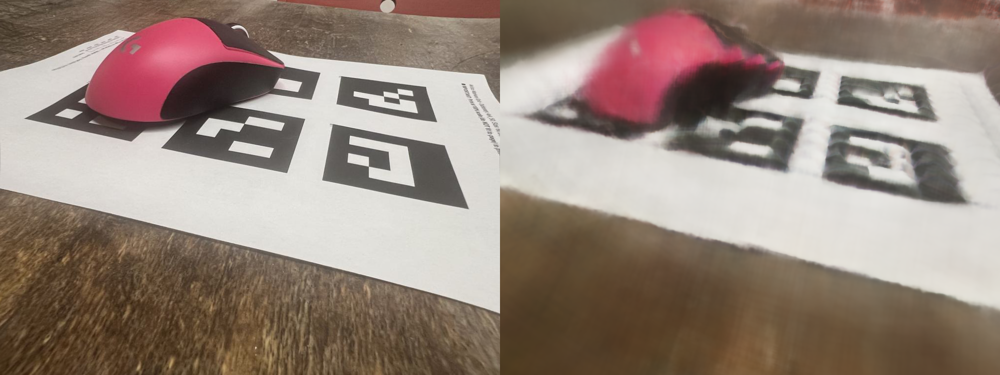
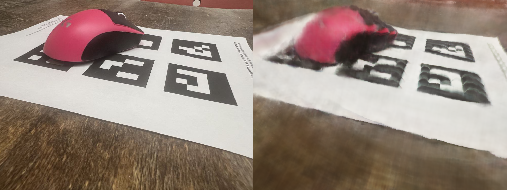
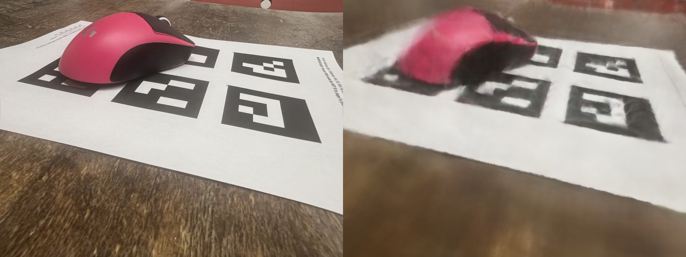
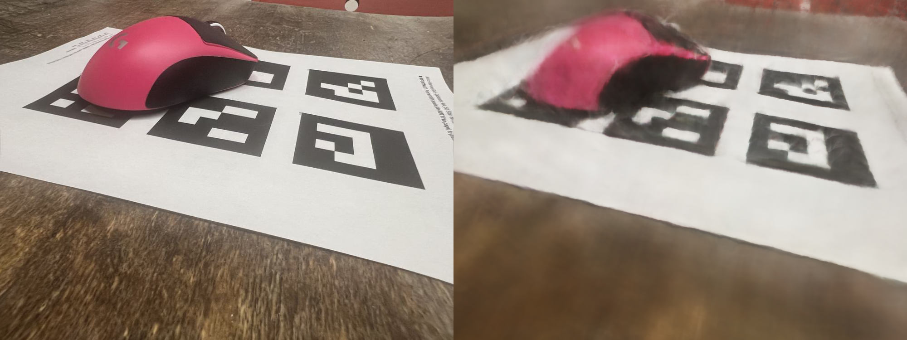
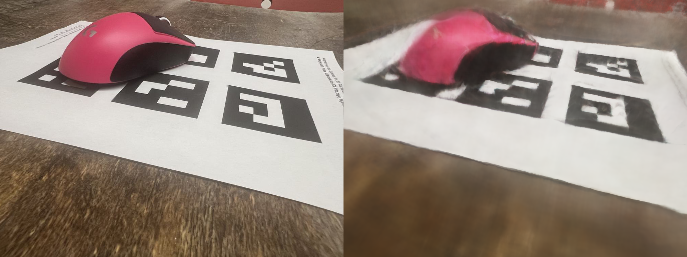
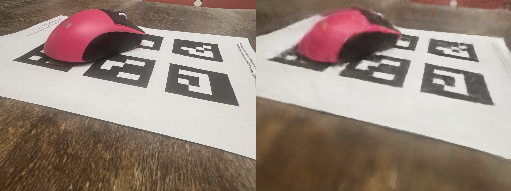


After training completes, I render a circular camera path around the mouse using a “look-at-origin” helper and fixed intrinsics. The final result is exported as a GIF: